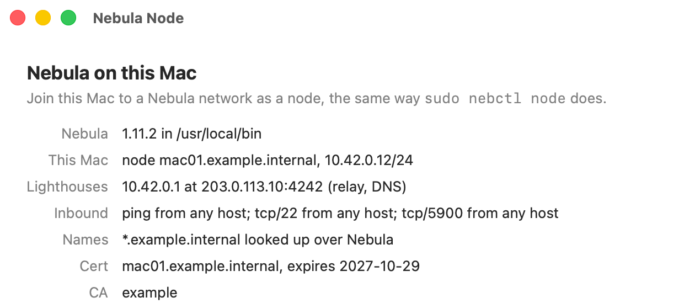
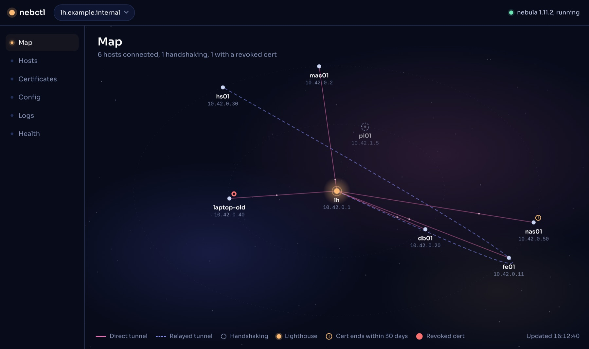
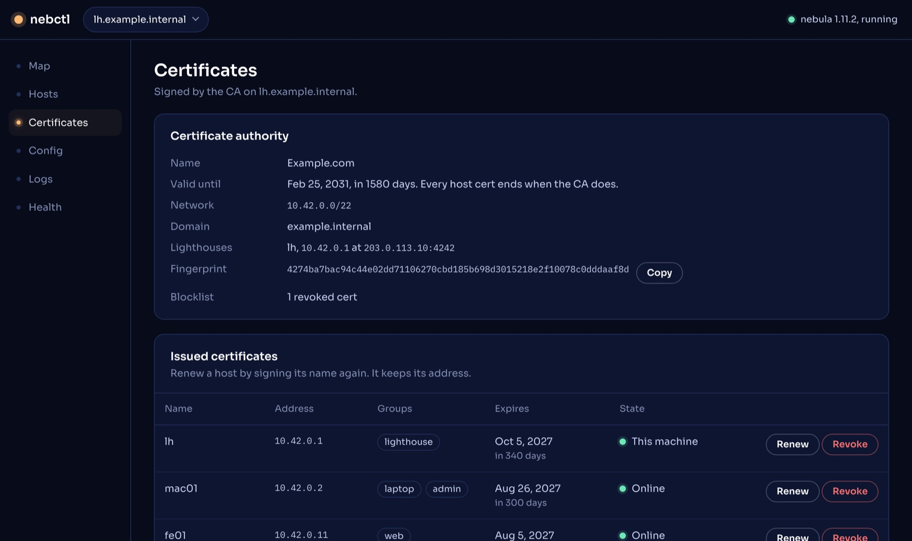
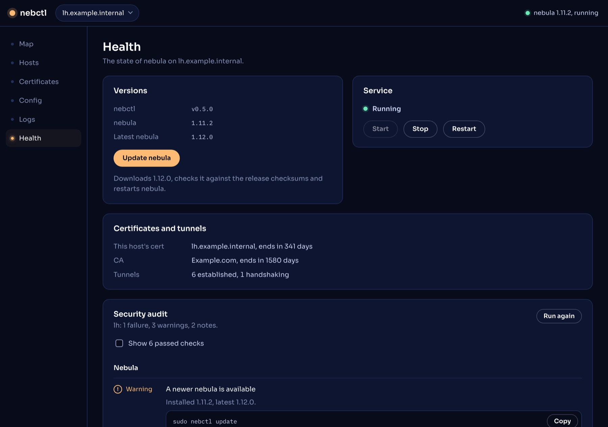

Step 1
Install Nebula Node
- Download it, unzip it, and drag Nebula Node to Applications.
- In Terminal, clear the download flag (the app isn't notarized yet) and make it root's (it runs its tools as root):
sudo xattr -cr "/Applications/Nebula Node.app" sudo chown -R root:wheel "/Applications/Nebula Node.app"

Step 2
Set up the lighthouse
SSH to a Linux server with a public IP and install nebctl:
curl -LO https://github.com/davewat/nebctl/releases/latest/download/nebctl-linux-amd64 sudo install -m 0755 nebctl-linux-amd64 /usr/local/bin/nebctl sudo nebctl lighthouse
Press Enter to take the defaults. Then open UDP 4242 in the server's firewall, and run sudo nebctl ca sign to make a bundle for your Mac.
you@lh: ~
$ sudo nebctl lighthouse Install the latest release now? [Y/n]: Installed nebula 1.12.0 into /usr/local/bin (checksums verified). How should this host get its certificate? 1) Create a new CA here, then sign this lighthouse's cert Choose [1]: Name for the CA (your organisation or domain) [Nebula CA]: example Nebula network; every host gets an address in it [10.42.0.0/22]: Domain for Nebula host names (- for none) [example.internal]: Host name for the cert (a short name gets .example.internal): lh Public IP or DNS name other hosts reach this machine at [203.0.113.10]: … Wrote /etc/nebula/config.yml (nebula -test passed). nebula is running and starts at boot.
Step 3
Join your Mac
Open Nebula Node, click Set Up This Mac as a Node, and paste the bundle. It installs nebula and starts it at boot. Your Mac can then reach each host by name, like ssh lh.example.internal.
Step 4
Manage it all from one console
Click Open Admin Console in Nebula Node, then connect to your lighthouse over SSH.



Also: firewall rules, logs, and forwarding logs to your SIEM.